JNDI y acceso a bases de datos con el servidor de aplicaciones
Introducción
En este tema veremos cómo una aplicación que corre en un servidor de aplicaciones se puede conectar a una base de datos. Para ello, primero explicaremos JNDI que nos va permitir acceder a recursos (una conexión a BD es un recurso) para más tarde detallar las opciones dentro de WebLogic para la configuración de un acceso a BD.
JNDI: búsqueda de objetos mediante su nombre lógico
JNDI (Java Naming and Directory Interface) es un API para el acceso a diferentes servicios de nombres y directorios de una manera uniforme. Proporciona un mecanismo para enlazar programas Java con, por ejemplo, sistemas de ficheros, recursos de red, recursos de bases de datos o servicios de directorios (LDAP). El API de JNDI permite encontrar objetos y datos registrados en estos servicios y así mismo registrar sus propios objetos y datos para que sean usados por otros usuarios.
JNDI suele ser utilizado para lo siguiente:
- Servicio de nombres: asocia nombres lógicos a recursos. Se detalla en la siguiente sección. Este servicio es muy similar al servicio DNS de la web. Cuando solicitamos una dirección web, el DNS se encarga de buscar la dirección IP asociada y la devuelve.
- Servicio de directorio: haciendo uso de otro servicio (LDAP, sistema de ficheros, etc.) JNDI proporciona todas las funcionalidades que permiten estos servicios. JNDI puede ser visto como un driver JDBC en el sentido de que se encarga de "traducir" las llamadas. En el momento de que un EJB, por ejemplo, pide un recurso a JNDI, éste pasa la petición al servicio correspondiente (LDAP, por ejemplo) y devuelve el recurso. El servicio de directorio es muy parecido al servicio X.500.
Un servicio de nombres proporciona un método para mapear nombres lógicos (por ejemplo, databd) con entidades u objetos (un recurso DataSource, un EJB, JMS, etc.). De esta manera, no tenemos que buscar un determinado objeto, sino que buscaremos su nombre lógico. Pensad cuando trabajábamos con las bases de datos. Obteníamos una conexión a partir de un driver y nos conectábamos a una base de datos en concreto, que estaba alojada en una determinada dirección. Si la base de datos cambiaba de nombre o cambiaba su dirección debíamos reflejar dichos cambios en nuestro código. Si utilizamos JNDI y asociamos un nombre lógico, por ejemplo databd, a un objeto DataSource, el objeto DataSource es el que manejará los datos de la conexión con la base de datos. Nuestro código Java accede a JNDI y obtiene una referencia al objeto DataSource asociado con el nombre lógico. Si cambian los parámetros de conexión, debemos cambiar el objeto DataSource, pero no nuestro código Java, puesto que el nombre lógico no ha cambiado.
Vamos a definir un par de conceptos:
- Contexto: un contexto es similar a una conexión en JDBC. Cuando obtenemos un contexto de JNDI tenemos un flujo de información entre nuestra aplicación y el servicio deseado (de nombres o directorios). Podemos entender un contexto como un directorio del sistema operativo. Dentro de ese directorio podremos tener más contextos u objetos, de la misma forma que en un directorio podemos tener más directorios u objetos (ficheros, enlaces, etc.) Cuando creemos un contexto en nuestro código primero deberemos especificar una serie de propiedades.
- Enlace: un enlace es una asociación entre un nombre atómico y un objeto.
JNDI suele tener asociado un árbol. En la siguiente figura se muestra un posible árbol JNDI. Todo árbol tiene un contexto raíz, sin embargo el que se utiliza para trabajar es el contexto inicial. A partir de este contexto podemos acceder a los objetos enlazados con este contexto (representados con un triángulo) o descender a subcontextos (los contextos se representan mediante círculos). De esta forma podemos agrupar objetos y organizarlos a nuestra manera. Dentro de JNDI podemos hacer referencia a subcontextos utilizando el "." como delimitador.
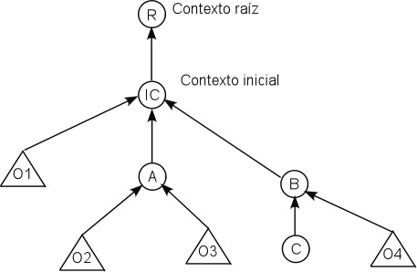
Programar con JNDI
Para acceder al contexto inicial debemos utilizar un código similar al mostrado a continuación:
Context miContexto = null; Hashtable ht = new Hashtable (); ht.put(Context.INITIAL_CONTEXT_FACTORY, "weblogic.jndi.WLInitialContextFactory"); ht.put(Context.PROVIDER_URL, "t3://localhost:7001"); miContexto = new InitialContext (ht);
En la primera línea hemos creado un objeto de la clase Context que nos va a gestionar el contexto. La tabla Hash creada sirve para pasar unos cuantos parámetros iniciales. El primer parámetro es quién nos va a proporcionar el árbol JNDI, en este caso Weblogic. El segundo parámetro es la URL del servidor que nos proporcionará el árbol. Una vez asignados los parámetros iniciales creamos un contexto inicial. En todo código JNDI debemos capturar la excepción NamingException.
Cuando terminemos de utilizar el contexto debemos cerrarlo llamando al método close de Context.
Para asociar un objeto en el árbol utilizaremos el siguiente código:
Persona persona = new Persona();
miContexto.bind ("objeto persona", persona);
// miContexto.rebind ("objeto persona", persona);
Hemos creado un objeto cualquiera, en este caso el objeto persona. Utilizamos el contexto para asociar (bind) el nombre "objeto persona" al objeto. Si utilizamos el método bind y ya existe una asociación con este nombre en el árbol, se producirá una excepción. Por ello se puede utilizar la llamada al método rebind que, caso de existir, reemplaza la asociación anterior.
También podemos crear subcontextos para organizar mejor nuestra información. Para crear un subcontexto podemos utilizar el siguiente código:
Context subcontexto = miContexto.createSubContext ("empleados");
Persona persona = new Persona();
subcontexto.bind ("contable", persona);
Hemos creado un subcontexto enlazado con el contexto inicial y dentro de ese subcontexto hemos asociado un objeto.
Por último, queda recuperar un objeto dentro de un contexto. El siguiente código devuelve el objeto introducido en el ejemplo anterior. Observad que es necesario realizar una conversión al objeto que esperamos que se devuelva.
Persona pers = (Persona) miContexto.lookup ("empleados/contable");
Weblogic y JNDI
Weblogic gestiona un árbol JNDI propio, donde las aplicaciones pueden asociar objetos para que puedan ser utilizados por otras aplicaciones. Podemos ver el árbol JNDI de un determinado servidor. Para ello pinchamos sobre el servidor que queramos consultar y nos aparece un enlace (View JNDI tree que nos mostrará una nueva ventana con el árbol.
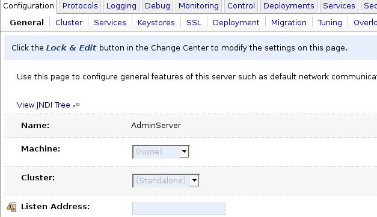
Se nos abrirá una nueva ventana que nos mostrará el árbol JNDI. Esta ventana es muy similar a la consola, puesto que está dividida en dos y tiene un elemento de navegación en la parte izquierda. En la figura se muestra los tres objetos que posteriormente adjuntaremos al árbol. Podemos definir la seguridad para cada elemento del árbol, tal como lo hemos hecho hasta ahora.
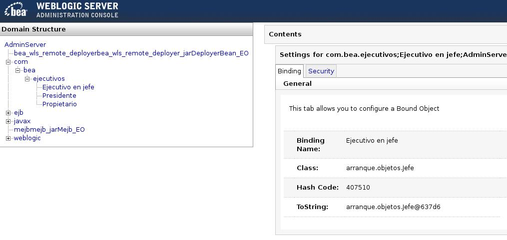
Clases de arranque y parada
Algunas veces se hace necesario el uso de clases para realizar ciertas tareas tanto en el arranque como en la parada de los servidores. Un posible ejemplo son las asociaciones que se han creado en el árbol JNDI dentro de WebLogic. Una vez que paremos los servidores estas asociaciones no persisten. Podemos hacer uso de clases que carguen estas asociaciones y que las almacenen cuando paremos los servidores. Para utilizar una clase de arranque o parada pinchamos en Environment ->Startup & Shutdown Classes y creamos una clase nueva (ver siguiente imagen).
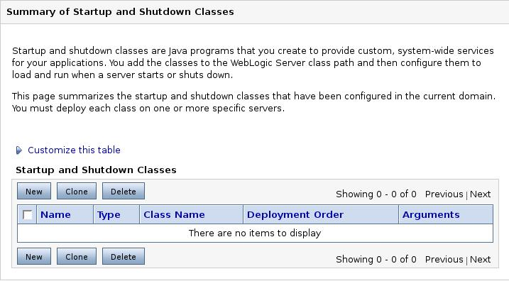
Lo primero es definir si se trata de una clase de arranque o de parada.
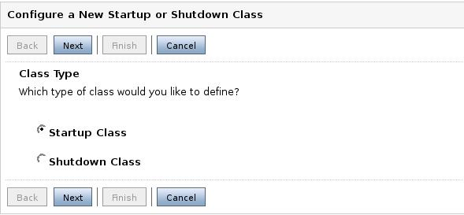
Debemos especificar el identificador de la clase (elegido de forma arbitraria) y el nombre de la clase. Tened en cuenta que la clase debe estar incluida en el CLASSPATH. Para ello debemos añadir el camino hasta nuestras clases a los ejecutables startWebLogic.cmd y startManagedWebLogic.cmd.
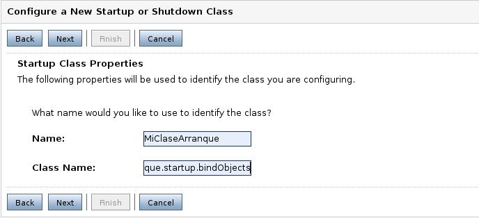
Como siempre, debemos seleccionar los servidores en los que se desplegará las clases.
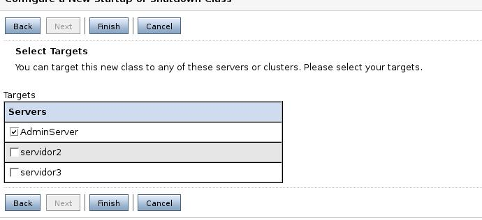
Debemos activar los cambios en el Change Center. Una vez realizado el despliegue de las clases debemos reiniciar los servidores que se vean afectados. A partir de este momento, desde cualquier aplicación podremos acceder a estos objetos, haciendo uso de JNDI. Este ejemplo (servd-aplic-arranque.zip) contiene varias clases de arranque. Extraed el proyecto y desplegad el fichero arranque.jar.
Si listamos las clases de arranque y parada en nuestro sistema y pinchamos sobre una de ellas, nos permite configurar el comportamiento de estas clases (ver siguiente figura). En concreto tenemos el orden de despliegue, que nos permite desplegar algunas clases antes que otras (es posible que una clase necesite objetos que despliega otra); posibles argumentos a la clase; y configurar el comportamiento de despliegue: si existe algún fallo en el despliegue de la clase que provoque un fallo en el arranque del servidor, y que se ejecute antes o después del despliegue de las aplicaciones.
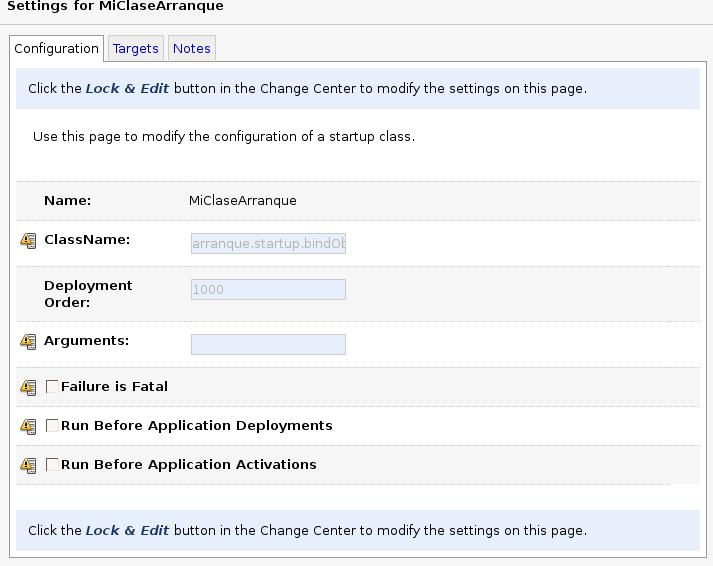
Configuración de las fuentes de datos y el pool de conexiones
Hasta ahora la conexión a una base de datos se realizaba mediante un código JDBC que utilizaba un driver y obtenía una conexión. Una aplicación que utilice este código puede seguir haciéndolo dentro de WebLogic, es decir, si desplegamos esa aplicación en WebLogic la aplicación funcionará correctamente. En esta sección vamos a configurar el servidor de aplicaciones para que nos permita trabajar con JDBC, aprovechando las características de pool de conexiones y fuentes de datos. También veremos cómo podemos conseguir una conexión controlada por el servidor. Un esquema general de cómo maneja WebLogic las bases de datos es el siguiente:
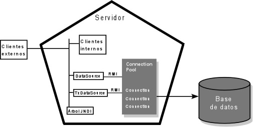
Tanto los clientes externos como los internos obtienen un objeto DataSource mediante el árbol JNDI gestionado por el servidor. Una vez obtenido este objeto, se solicita una conexión a través de él, que a su vez la obtiene de un Connection Pool gestionado por el servidor. El paso del Connection Pool es transparente para el que lo va a usar. En versiones anteriores a la 9.0, WebLogic permitía definir el pool de conexiones por un lado y las fuentes de datos por otro. A partir de esta versión, WebLogic gestiona el pool, aunque deja una opción (deprecated) para compatibilidad con códigos desarrollados para versiones anteriores (Data Sources Factories).
Fuentes de datos
Pasamos ahora a definir una fuente de datos. Pinchamos en Services -> DataSources. Pinchamos en configurar una nueva fuente de datos y nos aparecerá una figura como la siguiente. Damos nombre a esta nueva fuente de datos. El nombre JNDI es el identificador que nos servirá para obtener el objeto DataSource usando JNDI. Debemos elegir el SGDB a usar. Ya hay algunos definidos y se nos mostrará el driver a usar. Seleccionamos MySQL y el driver correspondiente. Previamente tenemos que añadir al CLASSPATH el fichero que contiene el driver.
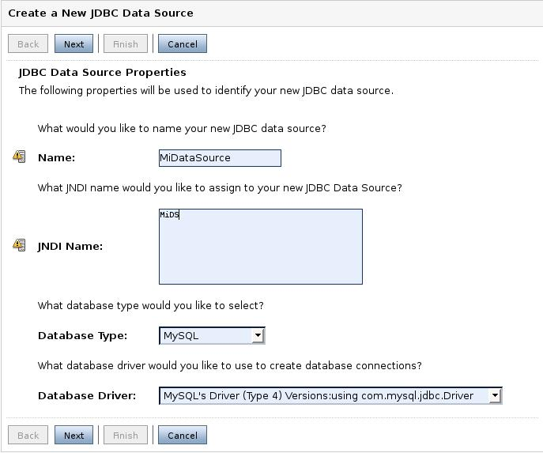
Aquí debemos definir las opciones de transacciones que vamos a necesitar.
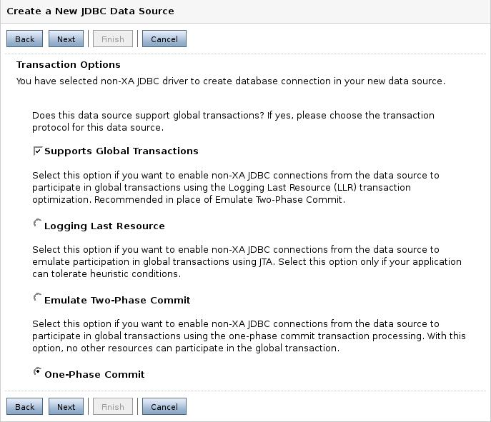
Lo siguiente son las propiedades de la conexión. Aquí especificaremos el nombre de la BD, el nombre y el puerto de la máquina que hace de servidor de la BD y el usuario y contraseña con la que entraremos.
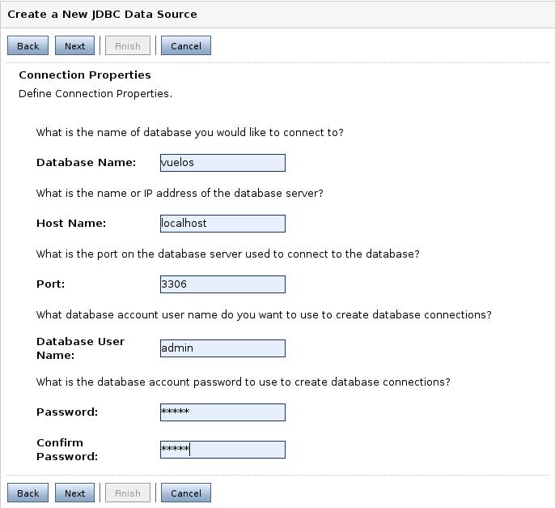
La siguiente opción nos permite comprobar el funcionamiento de la conexión. Si pinchamos en Test Configuration, WebLogic intentará probar la conexión para comprobar si todo es correcto, avisándonos con el resultado.
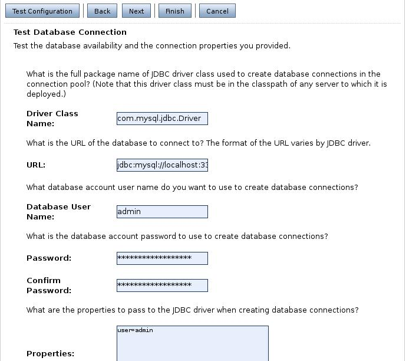
Por último, debemos seleccionar en qué servidores desplegamos la aplicación y pinchar en Finish.
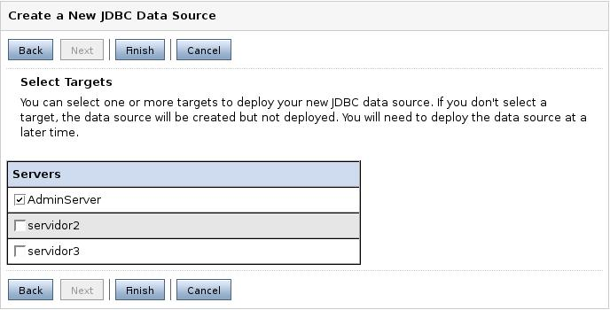
A pesar de que la propia fuente de datos gestione el pool de conexiones, se pueden definir algunas propiedades de este pool. Nos vamos a la lista de fuentes de datos (Services->JDBC->Data Sources) y pinchamos sobre el nombre de la fuente de datos a modificar. Nos vamos a la solapa Configuration->Connection Pool y nos aparece una ventana como la siguiente.
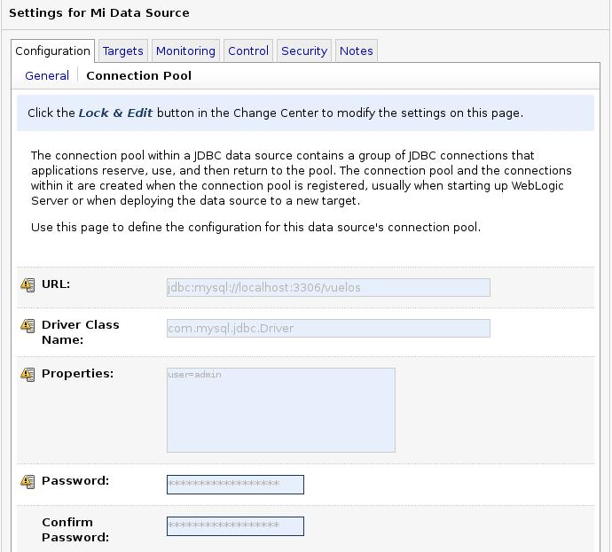
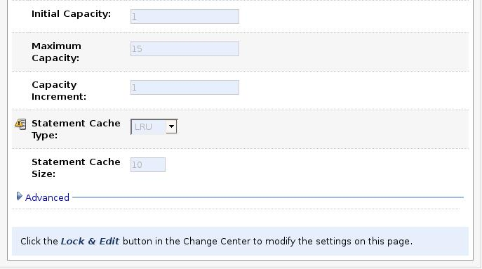
Además de los campos como la URL, usuario, etc. tenemos los siguientes:
- La capacidad inicial indica el número de conexiones que se crearán en el instante inicial.
- La capacidad máxima es el número máximo de conexiones que se abrirán en este pool, independientemente de las solicitadas.
- El incremento de capacidad maneja el número de conexiones que se abrirán cuando llega una nueva solicitud de conexión y todas están ocupadas. Es recomendable crear varias conexiones a la vez, pues es un recurso crítico.
- El statement cache es un mecanismo proporcionado por WebLogic
para realizar una cache de las llamadas y métodos preparados (prepareStatement).
Cuanto alguna aplicación llama a Connection.prepareStatement()
el servidor se encarga de crear y meter en la caché este procedimiento,
para que pueda ser utilizado por sucesivas llamadas. Podemos especificar
el tamaño de esta caché. Se pueden utilizar dos tipos de caché:
- LRU (Least Recently Used): va incorporando a la caché nuevos procedimientos hasta que se alcanza el máximo, momento que elimina el menos usado.
- Fixed: en este caso sólo almacena en la cache el número de procedimientos indicado, no haciendo nada con los sucesivos.
Existe otra opción dentro de JDBC: los Multi Data Sources. Simplemente son un conjunto de fuentes de datos, agrupados para dar soporte de balanceo de carga y recuperación ante fallos. La creación de un elemento de este tipo se tiene que realizar después de haber creado el resto de fuentes de datos. Creamos un nuevo multi DS. Le damos nombre, nombre en el árbol JNDI, y el tipo de algoritmo a usar. Existen dos algoritmos: failover: cuando una aplicación pide una fuente de datos, el multiDS le pide la conexión a la primera fuente de datos, si falla se la pide a la segunda y así sucesivamente; load balancing: la primera petición va a la primera fuente de datos, la segunda a la segunda, etc.
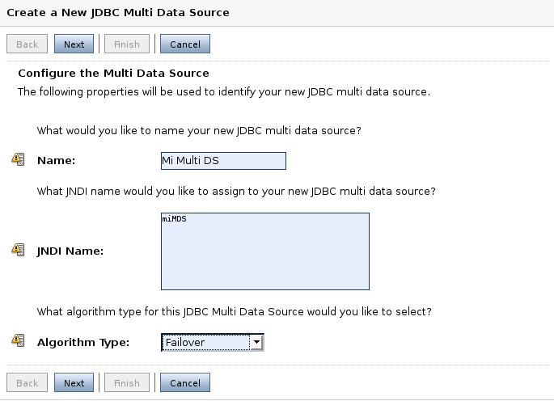
Seleccionamos si el driver es de tipo transaccional o no.
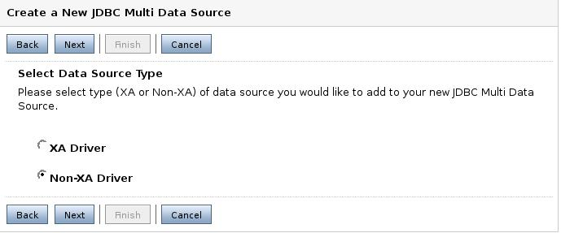
Por último, debemos decir qué fuentes de datos (anteriormente creadas) se deben adjuntar a este multiDS.
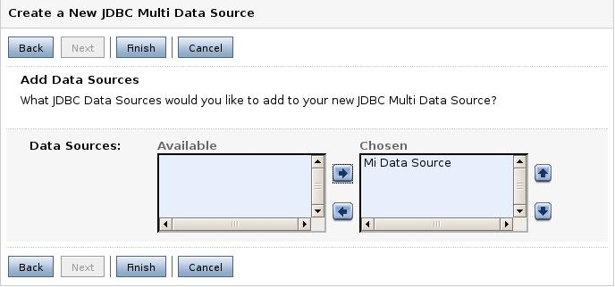
Uso de una fuente de datos en una aplicación
Para hacer uso de una fuente de datos definida por el servidor de aplicaciones debemos obtener una conexión haciendo uso de un objeto DataSource. Este objeto se obtendrá haciendo uso de JNDI. Dentro de un programa JDBC los pasos a seguir para obtener una conexión son los siguientes:
- Debemos importar las clases para el manejo de las fuentes de datos y JNDI.
import javax.sql.DataSource; import javax.naming.*; import java.util.Hashtable;
- Definimos un contexto inicial (JNDI). Si estamos realizando una aplicación
que se ejecutará dentro del propio servidor que gestiona el árbol JNDI podemos
obtener directamente el contexto inicial. Si la aplicación se ejecuta desde
fuera del servidor, tenemos que usar el siguiente código: La tabla Hash sirve para
definir algunas variables de JNDI. En este caso le decimos que el contexto
inicial se debe obtener de WebLogic y que la URL se obtiene del servidor
de aplicaciones. En esta URL debemos especificar la dirección del
servidor que tenga asignado el recurso.
Context miContexto = null; Hashtable ht = new Hashtable (); ht.put(Context.INITIAL_CONTEXT_FACTORY, "weblogic.jndi.WLInitialContextFactory"); ht.put(Context.PROVIDER_URL, "t3://localhost:7001"); miContexto = new InitialContext (ht);
- Obtenemos la fuente de datos buscando por el nombre lógico asociado
al pool de conexiones antes creado. Recordad que es el nombre lógico
para JNDI, no el nombre de la fuente de datos.
DataSource ds = (DataSource) miContexto.lookup ("MySQLDataSource"); - El último paso es obtener una conexión a la base de datos
a partir de la fuente de datos.
Connection con = ds.getConnection ();
Para poder ejecutar debemos tener en el CLASSPATH el siguiente fichero:
$HOME_BEA/weblogic90/server/lib/weblogic.jar
donde $HOME_BEA es el directorio donde está instalado Bea. También, por supuesto, debe estar funcionando el servidor de aplicaciones y el de la base de datos.